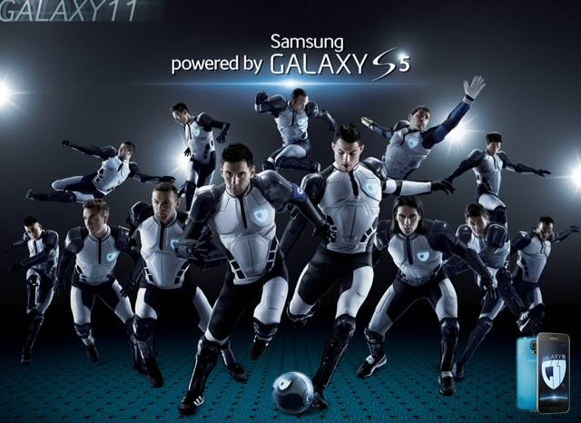
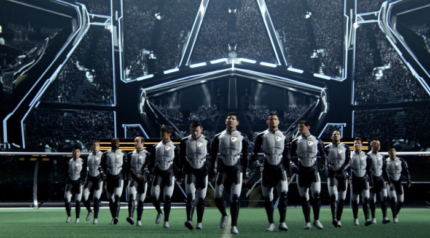

案例发生了什么
谁参与Samsung
发生节点 / 场景2014 巴西世界杯周期；全球；非官方赛事赞助 / 全球球星资源
传播形式世界观叙事型；连续剧型；科技产品植入型
传播核心把梅西、C 罗、鲁尼等 11 位球星组成“Galaxy 11”，通过训练、招募和终极比赛保卫地球，把手机新品发布包装成一部长达八个月的足球科幻连续剧。


把梅西、C 罗、鲁尼等 11 位球星组成“Galaxy 11”，通过训练、招募和终极比赛保卫地球，把手机新品发布包装成一部长达八个月的足球科幻连续剧。
先用贝肯鲍尔遭遇外星人制造悬念；逐个公布球员；发布训练片、音乐片和最终比赛；配套移动游戏、全球巡展、门店体验与 Galaxy S5 促销。
MARKETING KNOWLEDGE ROUTER · 营销知识路由器
营销启发卡
把历届经典的记忆点、商业结构和迁移方法放在同一层阅读。 卡片底部按主题连接全站相关案例、经典方法与深度文章。
01核心动作
11 位球星穿未来战甲
巨星集结、拯救世界、追更悬念与游戏式参与；11 位球星穿未来战甲，在银河球场代表地球比赛。
02传播与商业机制
Galaxy 既是手机系列名也是银河世界观
Galaxy 既是手机系列名也是银河世界观；设备功能被写入训练、侦察和比赛任务，科技产品因此成为故事装备；先用贝肯鲍尔遭遇外星人制造悬念；逐个公布球员；发布训练片、音乐片和最终比赛；配套移动游戏、全球巡展、门店体验与 Galaxy S5 促销。
03可复用的方法
多位代言人不必挤在一张合影里
多位代言人不必挤在一张合影里；统一世界观、角色任务和连续发布节奏，才能让明星矩阵成为可追更的内容资产。
适用条件、风险与证据
- 剧情可能压过产品，且球员入选国家队、伤病与赛果会造成内容失真；必须预留替换机制并控制单集的产品证明。
- 后续复盘还应补齐发布主体、时间线、真实执行图、媒介范围和结果口径；没有这些证据时，不把行业评价或赛事总热度写成品牌增量。
资料与来源
官方资料与原始来源
市场 / 权益
全球
非官方赛事赞助 / 全球球星资源
创意打法
世界观叙事型；连续剧型；科技产品植入型
- Samsung Mobile Press · 2014-07-16Galaxy 11 campaign concludes with The Match
- Samsung Newsroom · 2014-06-25Galaxy 11 制作与传播回顾
- Business Insider · 2014-07-16本页真实案例图片主源
来源按品牌/官方发布、官方账号留存、权威媒体、获奖案例库分层记录；品牌与奖项自报结果不视作独立审计。